Muddy Landerson
Kubernetes Nerd, Python Developer, Self-hosting and homelab advocate. Spend my days writing software for automated Kubernetes deployments, spend my nights managing a Mastodon server for some friends/family and experiementing in my homelab!
Really enjoying the shift to De-centralized social media and web in general. It's time to take back control of the internet, rather than handing it to a few big companies on a silver plater. It may not be as easy for folks, but it is sure getting easier.
Blog
muddy@hutmail.cc
Privacy Policy | Build your own by forking LittleLink.